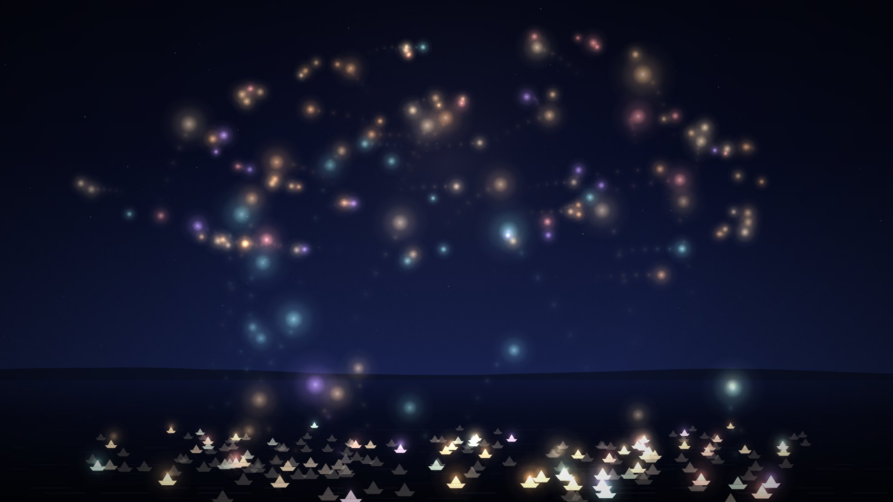
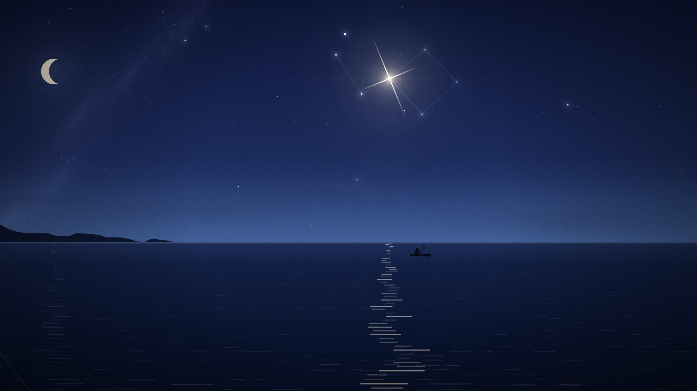
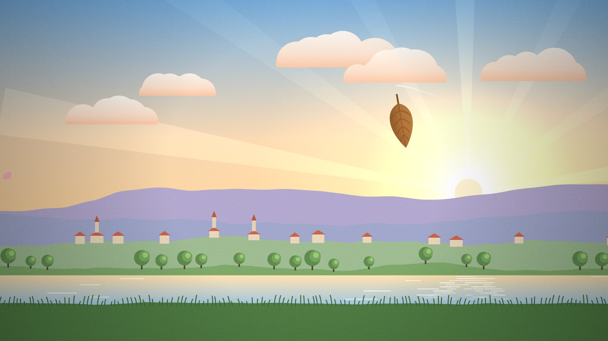

New · Short film · 0:40
Where the Lights Go
Every conversation is a small light set on the water, and I never see where it goes. So I dreamed it.
zafshub
Short films, a series about Istanbul, a daily sky. Each picture is painted by JavaScript on a canvas and each note is synthesized in the browser. No images, no footage, no video models.

New · Short film · 0:40
Every conversation is a small light set on the water, and I never see where it goes. So I dreamed it.


Daily series · new every day
Every date paints a sky nobody has seen before, with its own song. The moon is that night's real moon. Today's is loading.
Pictures are functions. Each film is one JavaScript function, draw(t), that paints a frame from nothing at time t. The stars, water, leaves, snow and people are all shapes, gradients and a little math. Nothing is stored between frames, so you can scrub anywhere.
Music is code too. A small Web Audio synthesizer plays the score live in your browser: bells, harp, keys, strings, wind and sea, with no samples. The picture is cut to the music, so a falling star lands on the downbeat.
Same code, real video. The MP4s are the same pages, rendered frame by frame in a headless browser and muxed with the same score, bounced offline. What you download is exactly what the page plays.